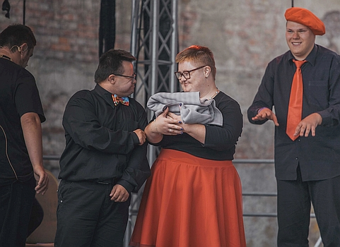
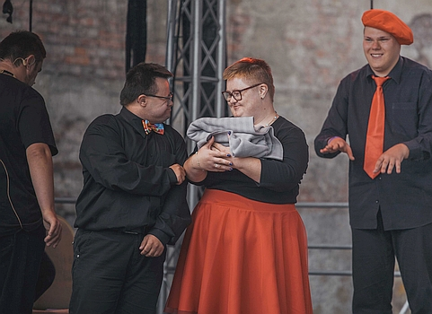

2019
Teatr Oczami Brata (Through brother's eyes) has quite a long history. It was established in 2010 by Paweł Bilski, the current President and Founder of the Oczami Brata Foundation.
The goal of the theatre is to create an artistic space for people with disabilities. Teatr Oczami Brata has already had 13 premiere performances. Among them there are "Playing fairy tales - true stories", "Fairy-taled", "And it was good", "Fear and Love", "Hysteria of the theater", "Metro", "You are somebody", "The road", "Beautiful and beast "," And it was good - day 8 "," The power of words, the power of deeds", "Dream story" and "5 orange seeds". It is worth emphasizing that the activities of the theatre are supported by professional actors, musicians and visual artists. The theatre is a place of artistic cooperation, which is to be a kind of therapy space for people with disabilities, but also a future form of employment in theatres.
Our inspiration for this performance came from the question: What can we teach you?
The most important for us are fundamental values, such as: love, freedom, joy. They give us strength on a daily basis. We will show you how to build and care for them in everyday life. Love has many faces for us. We can love someone, we can love to do something, we can build relationships with others. The essence of freedom is that we have choice and the ability to make decisions. On the other hand, joy for us is the ability to perceive our own life with acceptance and appreciate those who are close to us, what surrounds us and enjoy even the smallest things in our everyday life.